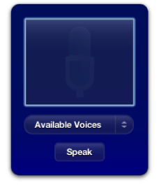

Accessing Command Line Utilities
Dashboard provides you with a method for using command-line utilities and scripts within your widget. With this capability you can use any standard utilities included with the system or any utilities or scripts you include within your widget.
Note: Before reading this chapter, read “Specifying Access Keys” to learn more about the widget access keys.
Contents:
The System Method
Synchronous Operation
Asynchronous Operation
The System Method
Running a command-line utility or script within your widget requires you to use the widget.system() method. The method is defined as:
widget.system("command", handler) |
The parameters of the widget.system() method are:
Parameter | Definition | Example |
|---|---|---|
| A string that specifies a command-line utility; may contain parameters and flags. | " |
| A function called when the command-line utility finishes execution; toggles execution of the command between synchronous and asynchronous modes. If specified, the handler needs to accept an argument. |
|
Note: When specifying the command, always include the full path to the command or the path to the command relative to the root level of the widget. If you are unsure what the path is, the command which can tell it to you.
widget.system().Depending on what you pass into the handler parameter, your call to widget.system() will operate in one of two modes: synchronous or asynchronous.
Synchronous Operation
Using widget.system() synchronously means that you are going to hold up the execution of your widget until you get the results of the command you are running. You want to use them this way when working with commands that provide output once and execute in a short period of time.
Note: Using widget.system() synchronously is recommended only for development and debugging purposes. Do not deliver a widget that uses widget.system() synchronously; instead, use widget.system() asynchronously, discussed in “Asynchronous Operation,” when delivering a shipping widget.
An example of this would be if you wanted to run the command id from within your widget:
widget.system("/usr/bin/id -un", null); |
The first argument specifies the command you want to run; here, you’re running id with the flag -un. You have not specified an event handler for this command, so all execution in your widget halts until this command is finished.
Running id as shown above executes the command, but any output is lost since you don’t specify that you want that information. To get its output, specify the outputString property and save it in a variable:
var output = widget.system("/usr/bin/id -un", null).outputString; |
You can get either the output string, the error string, or the command’s output status when using widget.system() synchronously:
Property | Definition | Usage |
|---|---|---|
| The output of the command, as placed on |
|
| The output of the command, as placed on |
|
| The exit status of the command. |
|
Asynchronous Operation
Providing a handler as the second argument of widget.system() runs the command in asynchronous mode. This means that execution within your widget continues while the command is executing. The handler that you specify is called when the command is finished and needs to accept a single object as a parameter. That object contains the last output of the command as it finishes execution. You can retrieve these properties from it:
Property | Definition |
|---|---|
| The last output of the command, as placed on |
object. | The last output of the command, as placed on |
| The exit status of the command. |
Because the command is running asynchronously, it may be necessary to interact with the command during its execution. Using widget.system() asynchronously returns an object that you can use for further interaction with the command:
var myCommand = widget.system("/sbin/ping foo.bar", endHandler); |
The object returned (and saved in myCommand) responds to a number of methods and has various properties:
Option | Purpose | Description |
|---|---|---|
| Property | The current string written to |
| Property | The current string written to |
| Property | The command’s exit status, as defined by the command. |
| Event Handler | A function called whenever the command writes to |
| Event Handler | A function called whenever the command writes to |
| Method | Cancels the execution of the command. |
| Method | Writes a string to |
| Method | Closes |
For instance, to run the command ping and be notified every time it writes something to stdout, use this code:
var myCommand = widget.system("/sbin/ping foo.bar", endHandler); |
myCommand.onreadoutput = outputHandler; |
Alternatively, you can use:
widget.system("/sbin/ping foo.bar", endHandler).onreadoutput = outputHandler; |
Your onreadoutput handler should accept an argument. When it is called, it is passed a string that has the most recent string placed on stdout:
function outputHandler(currentStringOnStdout){ // Code that does something with the command’s current output like... |
document.getElementById("element").innerText = currentStringOnStdout;} |
Commands such as ping run indefinitely, so you probably want to end its execution at some point. Use the cancel() method on the object that you receive from widget.system() to do this:
myCommand.cancel(); |
Other commands, such as bc, require input at some point in their execution. To write to standard input (where these commands expect their input), use the write() method:
myCommand.write("8*5"); |
To close these commands properly (using the end-of-file, or EOF, signal), use close():
myCommand.close(); |
Don’t forget that in order for this command to run asynchronously, you need to provide an event handler for the end of execution. This handler is passed the same object that is created when you first use widget.system(). That means that you can get the command’s status code or, if you didn’t use the onreadoutput or onreaderror handlers, you can obtain the command’s complete output to stdout or stderr, respectively.
Sample Code

The Voices sample widget (available in the Voices sample project) uses widget.system() asynchronously. When Voices is first opened, it introduces itself:
function setup() |
{ |
if(window.widget) { |
currentlyBeingSpoken = widget.system("/usr/bin/osascript -e 'say \"Welcome to Voices!\" using \"Fred\"'" , doneSpeaking); |
} |
} |
By specifying a handler for when the command is finished executing, the command runs asynchronously. A global variable, currentlyBeingSpoken, is assigned the command object so that commands can be issued to it during its execution, if needed. The doneSpeaking() function, called when the command is done, sets currentlyBeingSpoken to NULL.
Later, when a user inputs a phrase to be spoken, this code is called:
if(window.widget) { |
if(currentlyBeingSpoken != null) { |
currentlyBeingSpoken.cancel(); |
} |
currentlyBeingSpoken = widget.system("/usr/bin/osascript -e 'say \"" + textToSpeak + "\" using \"" + chosenVoice + "\"'" , done); |
} |
Here currentlyBeingSpoken is checked to see if a command is already in execution. If so, the cancel() method is called on it to stop it and then a new command is issued. The done() function performs some user interface housekeeping and then calls doneSpeaking() to set currentlyBeingSpoken to NULL.
Voices also has each voice introduce itself when it is selected in a menu. This code follows a similar logic as the previous sample:
function voiceChanged(elem) |
{ |
var chosenVoice = elem.options[elem.selectedIndex].value; |
document.getElementById("voiceMenuText").innerText = chosenVoice; |
if(window.widget) { |
if(currentlyBeingSpoken != null) { |
currentlyBeingSpoken.cancel(); |
done(); |
} |
currentlyBeingSpoken = widget.system( |
"/usr/bin/osascript -e 'say \"Hi, I`m " + |
chosenVoice + ".\" using \"" + |
chosenVoice + "\"'" , |
doneSpeaking |
); |
} |
} |
© 2009 Apple Inc. All Rights Reserved. (Last updated: 2009-02-04)